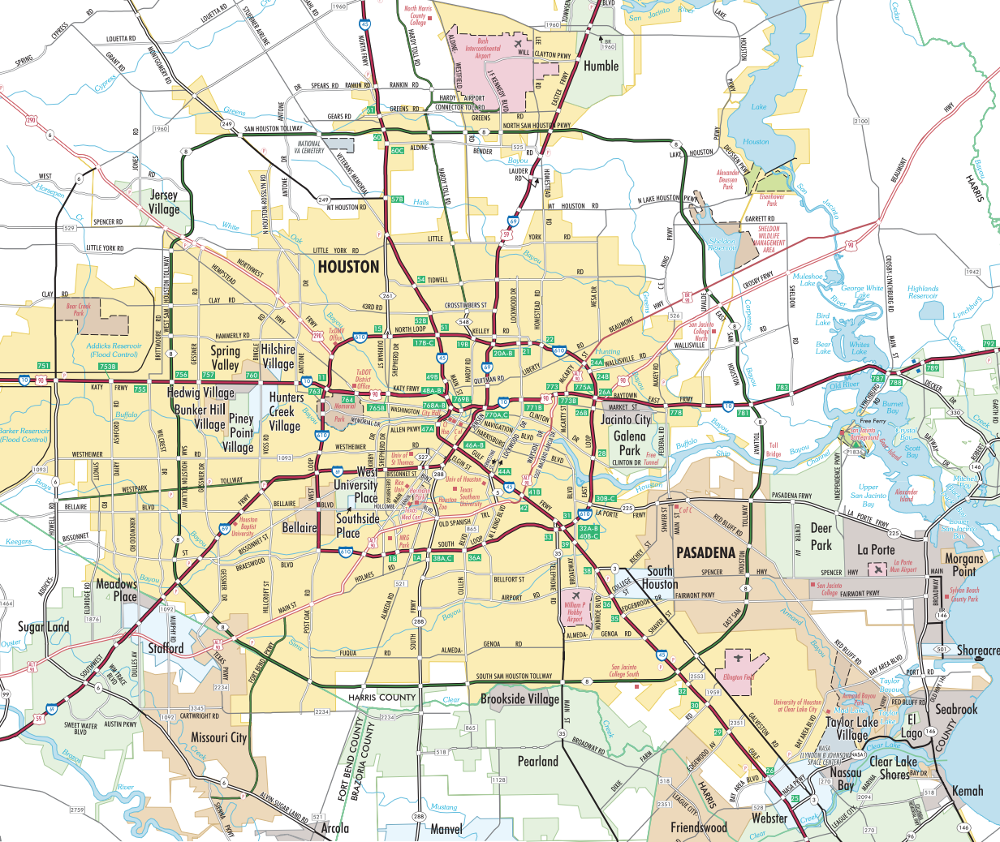

From the heart of Houston!
Aquatic Pool Cleaning is a full-service pool cleaning company based in Houston, Texas. At Aquatic Pool Cleaning, we are committed to providing a top-tier, eco-friendly pool and spa comprehensive suite of services including regular maintenance, emergency repairs, and custom cleaning solutions designed to keep your pool pristine, healthy, and crystal clear for enjoyment all year round. Our unique approach combines advanced cleaning technology and best-quality products to ensure that your pool is not just a leisure spot, but a lasting investment and your family’s well-being.
